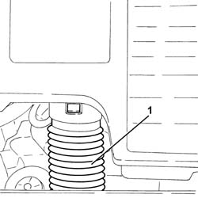

1048A23 cold air intake - r r
- Path
- Procedures > 10 ENGINE UNIT > 1048 ENGINE AIR SUPPLY CIRCUIT > 1048A vacuum air circuit > 1048A23 cold air intake - r r
- Kind
- repair procedure (removal / refitting; the operation number is the code)
- Applies to
- engines: 1.3 JTD 16v; all production periods
- Interactive page
- https://sloeber94.github.io/elrnDB-fPnd/en/#/2752584
Applies to: engines: 1.3 JTD 16v; all production periods
 Removing
Removing
 Refitting
Refitting1. Disconnect the air filter cold air intake, air filter side and remove it by releasing it from the front fastening.

Applies to: engines: 1.3 JTD 16v; all production periods
Refitting
RemovingFit the cold air intake for the air filter in place and connect it.